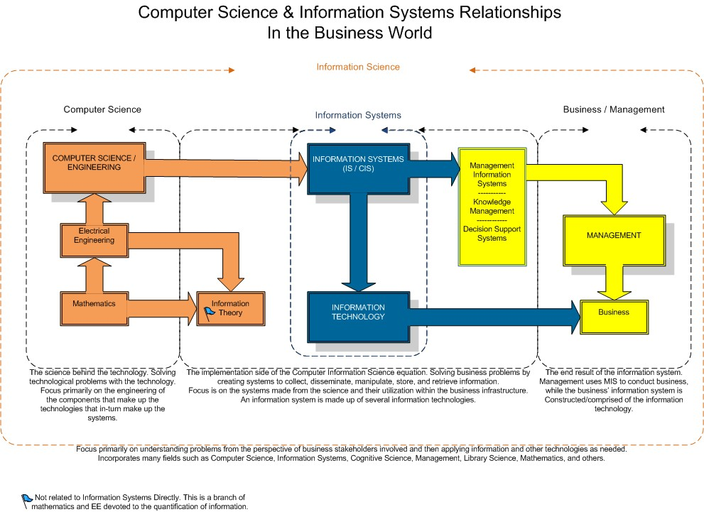

Overview
To understand the history and evolution of how Management Information Systems came about and where it is heading, first you must know what Management Information Systems is exactly.
What Are Management Information Systems?
Management Information Systems (MIS): Are a business function, like Accounting and Human Resources, which move information about people, products, and processes across a company to facilitate decision-making and problem-solving.
Decided by the innovative attributes that revolutionized the industry, the evolution of Management Information Systems is comprised of 5 distinct Eras:
- 1st Era: Mainframe and Micro Computing
- 2nd Era: Personal Computers
- 3rd Era: Client/Server Networks
- 4th Era: Enterprise Computing
- 5th Era: Cloud Computing
The 1st Era
The first era, pre-1965, was the period in which massive mainframe computers were developed and housed inside special temperature-controlled rooms which required specialized computer technicians to operate. IBM was the main supplier of this hardware and software during this time. Due to the extensive cost of ownership and operation of these mainframe computers, time-sharing was a common practice amongst initial users. With the advancement of computer technologies and shrinking size, major corporations who could afford to acquire these outrageously expensive computers started doing their own in-house computing.
The 2nd Era
The second era, 1965-1980s, was marked by the creation and introduction of the microprocessor into personal computers. In 1971, Intel's first microprocessor, the 4004, was introduced and squeezed the 2300 transistors of the 4-bit MPU into a 16-pin package. Microprocessors went through many innovative and technological advancements during this time. By the 1980s, the personal computer boom was in full force with the creation of the low-cost Apple I and II and the IBM PC.
The 3rd Era
The thrid era, 1980s-late 1990s, as micro computers decreased in price and increased in computational power, there was a transition from centralized servers, mainframes and minicomputers, to client/server networks. This occured because ordinary employees were the primary users of these computers and required the transfering of information throughout a company for internal business comunications. The transition to client/server networks enabled millions of people to access data simultaneously on networks called Intranets. This offered more individualized dominion of conputer resources, but complicated information technology management.
The 4th Era
The fourth era, late 1990s-2006, was designated by the implimentation of enterprise computing enabled by the advancement of high-speed networks. The implimentation of enterprise computing enabled companies to intergrate previously seperate department specific software applications all into one easily accessible software platform, known as enterprise software. This platform solution intergrated all of the essential business management structures and segregated departments, such as: Accounting, Finance, Sales & Marketing, Human Resources, Inventory & Manufacturing, information platforms altogether to provide management with a complete outlook on the valuable information from every aspect of the business structure.
The 5th Era
The fifth era, 2006-present (2019), is the era that we are in currently and was defined by the creation of cloud computing. The rapid growth in popularity and usage of mobile devices, such as smartphones, tablets, and laptops, created a necessary demand for faster and more mobile-friendly networking capabilities. Thus, the creation of ultra high-speed 5G cellphone and WiFi networks, which enable networking technologies to deliver software applications and data storage indepentently and regardless of configuration, location, or hardware.
| 1st Era | 2nd Era | 3rd Era | 4th Era | 5th Era | |
|---|---|---|---|---|---|
| Timeframe | Pre-1965 | 1965-1980s | 1980s-1990s | 1990s-2006 | 2006-Present |
| Attribute | Mainframe & Micro Computing | Personal Computers | Client/Server Networks | Enterprise Computing | Cloud Computing |
